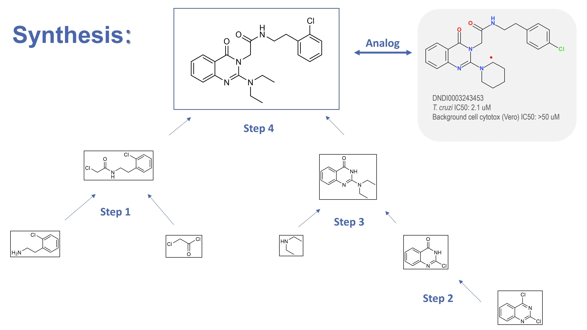

Education
- Ph.D in Biomolecular Modelling - University of Geneva | Ongoing
- Federal Diploma in Pharmacy (Pharm.D equivalent) | Oct 2023
- M.Sc in Pharmacy - University of Geneva | July 2023
- B.Sc in Pharmaceutical Sciences - University of Geneva | July 2021
- Swiss Matura (High School Diploma) - Gymnase de Nyon | July 2018
__________________
Experience
Ph.D in Biomolecular Modelling - University of Geneva
Prof. Francesco L. Gervasio
Ongoing
Currently, my focus is on G protein-coupled receptors (GPCRs), the largest family of receptors in the human body, which play a crucial role in numerous physiological functions, making them important targets for drug discovery. A detailed understanding of their activation mechanisms, from drug binding to effector signalling, will improve rational drug design. I aim to achieve this by using enhanced sampling molecular dynamics (MD) simulations in conjunction with other molecular modelling methods.
Structure of a typical Class A GPCR (β1-AR in green) bound to an agonist drug (dobutamine) and in complex with a G Protein (GαsGβ1Gγ2). See the PDB Entry - 8DCR.
Trainee Pharmacist - Pharmacie de L’Ile
Jan 2023 - June 2023
This training is an integral and mandatory part of my Pharm.D where I ensure that patients receive optimal treatments (even in the current drug shortage environment) and proper advices. I also assist pharmacists in the final review of prescriptions, assessing their adequacy and safety. I am committed to working collaboratively with patients by involving them in their own care.
Master’s Thesis - University College London
Prof. Shozeb Haider & Prof. Francesco L. Gervasio
Aug 2022 - Dec 2022
I studied the activation of human and murine LHCGR by an allosteric small molecule agonist using homology modelling and performing molecular dynamics simulation studies. I was able to highlight interesting drug-mediated activation mechanisms that may be useful for designing more potent drugs. Furthermore, the results suggest differences in human and mouse binding sites, implying that the use of mouse animal models is not optimal for predicting the structure-related effects of this drug.
Additionally, I was involved in the development of pancreatic cancer vaccines using patient neoantigens. I created an automated program using Python and Unix Bash Script to build homology models of patient’s neoantigen epitopes sequenced at The Johns Hopkins Hospital. The structural insights gained from these models were used to predict the immunogenicity of the epitopes, aiding rational vaccine development.
Student Research Assistant - University of Geneva
Prof. Stephane Guerrier
Aug 2022 - Currently
I scripted Monte Carlo simulations in R to compare statistical methods, performed data analysis, and developed Shiny web application for visualizing the results. I also scripted custom bootstrap resampling script to estimate population parameters in training data sets.
Research Internship - Melanoma Institute Australia
Prof. Serigne Lo
July 2022 - Aug 2022
Using the world’s largest melanoma database, I analyzed a dataset of 6,000 patients followed in a 17-year longitudinal study aiming to evaluate the effectiveness of sentinel lymph node biopsy in melanoma patients. I wrote scripts in R using a range of statistical approaches, such as Cox Regression Model and Propensity Score Stratification. From the analysis I generated tables and graphs to present the findings.
Open Synthesis Network - DNDi & University of Geneva
Dr Sébastien Tardy & Prof. Leonardo Scapozza
Feb 2021 - Apr 2021
Open Synthesis Network is a project in which students are involved in the initial stages of research into neglected diseases. All students are tasked with synthesising a molecule that has never been synthesised before. These molecules are analogues of a previously identified molecule active against Chagas disease. The general objective of the project is to test the activity, toxicity and pharmacokinetic parameters of all these analogues in order to find a candidate and propose a SAR for the target. I successfully synthesised and purified my assigned analogue, using pharmaceutical chemistry process and analytical techniques such as TLC, H-NMR, C-NMR, HPLC-MS and FTIR results.

July 2018 - Aug 2018
Summer Trainee - Firmenich
I prepared fragrance blends from laboratory compounds and in-house technologies for home care, body care and fine perfumery. Additionally, I was responsible for sample management tasks, including labeling, preparation for shipment, transportation to laboratories, inventory and disposal.
Outreach activities

Aug 2022 | Vice-Chairperson of the 4th IPSF EuRO Symposium
Appointed Vice-Chairperson in a team of 20 motivated student to organize a educative event gathering students from all over Europe. All of this with the appreciated support of the city of Bern, the Swiss U Change Fund and private sponsors.
Mai 2022 | Guest Speaker at 132. BVT - Leipzig
I participated in the national weekend of the BPhD (German Association of Pharmacy Students), where I spoke about the possibilities of student engagement at European and global level.
Mai 2022 | Delegate at the Geneva Health Forum 2022
I was at the Fight the Fake Alliance’s Booth speaking about the challenges and issues associated with substandard and falsified medicines. I also had the opportunity to participate in various sessions and have enriching exchanges.
Jan 2022 | Head of Public Relations - asep
I was elected to the board of asep (Swiss Association of Pharmacy Students), responsible for a team aiming to maintain a good image of the association and to develop the association’s relations with external stakeholders.
Oct 2021 | Delegate at the 43rd EPSA Annual Congress - Lyon
I attended the congress of EPSA (European Pharmacy Student’s Association) as an Offical Delegate to vote, debate and speak on behalf of the Swiss students
Oct 2021 | Guest Speaker at PsyKo 2021 - Leysins
At the Swiss national psychology student’s congress, I held a presentation on depressive disorders, with the perspective of pharmacy students, discussing pre-clinical research concepts and suggesting on the potential role of collaboration between pharmacists and psychologists
Aug 2021 | Delegate at the 66th IPSF World Congress - Seoul
I Attended the congress as an Offical Delegate to vote, debate and speak on behalf of the Swiss students
Feb 2021 | Co-Host of the Digital Health Panel Discussion
Co-organised and moderated a panel involving committed speakers from pharmacy, start-ups and academia to present their work related to digital health and answer students’ questions.
Jan 2021 | Contact Person to IPSF
Elected by asep to represent the Swiss students in the International Pharmaceutical Student’s Federation (IPSF), which is the umbrella organisation for pharmacy student’s association representing more than 500,000 students from over 100 countries worldwide. IPSF collaborates with many organisations such as WHO, UN, FIP, IFPMA and national stakeholders. I have supported student interests on topics such as education, the pharmacists’ evolving profession and Global Health.